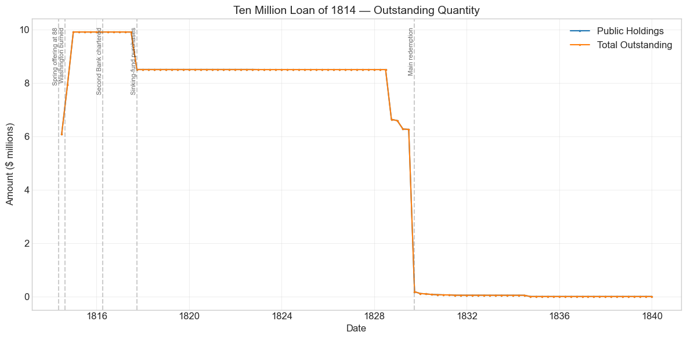
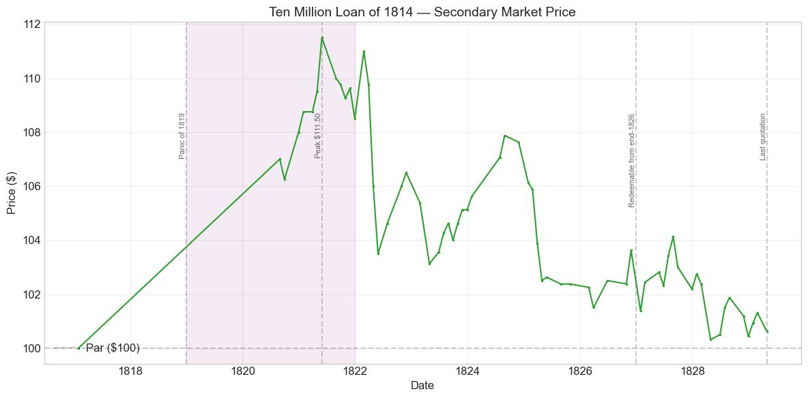
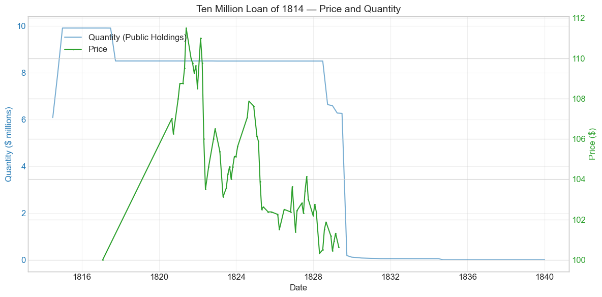
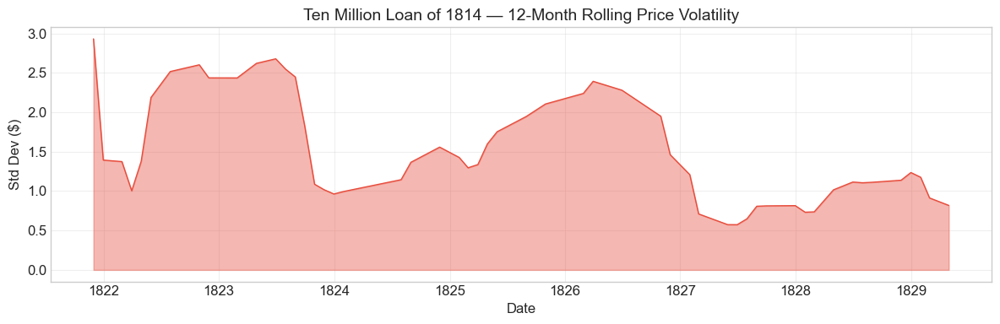

Bond Biography: Ten Million Loan of 1814#
Borrowing While the Capital Burned#
An enhanced chapter from the Hall-Payne-Sargent US Federal Bond Database (2,857 issues, 1776–1960)
Bond ID (L1): 20056 | Category: Interest Bearing > Marketable > Long Term Bond
import pandas as pd
import numpy as np
import matplotlib.pyplot as plt
import matplotlib.patches as mpatches
import datetime
import warnings
warnings.filterwarnings('ignore')
plt.style.use('seaborn-v0_8-whitegrid')
plt.rcParams.update({'figure.figsize': (12, 6), 'font.size': 12,
'axes.titlesize': 14, 'axes.labelsize': 12})
# Load the bond database
store = pd.HDFStore('../data/BondDF.h5', mode='r')
BondList = store['BondList']
BondQuant = store['BondQuant']
BondPrice = store['BondPrice']
store.close()
BondQuant_T = BondQuant.transpose()
BondPrice_T = BondPrice.transpose()
bond_id = 20056
print(f'Loaded data for: Ten Million Loan of 1814 (ID: 20056)')
/Users/thomassargent/anaconda3/lib/python3.9/site-packages/pandas/core/arrays/masked.py:60: UserWarning: Pandas requires version '1.3.6' or newer of 'bottleneck' (version '1.3.5' currently installed).
from pandas.core import (
Loaded data for: Ten Million Loan of 1814 (ID: 20056)
Overview#
The Ten Million Loan of 1814 was authorized under the Act of March 24, 1814. It was first issued on June 30, 1814 with a coupon rate of 6.0%. The bond was active during the War of 1812 and the Panic of 1819. During its lifetime on the secondary market, the bond’s average price was $104.62, ranging from $100.0 to $111.5 (based on 64 monthly observations from 1817-01-31 to 1829-04-30). Peak outstanding reached $9.92 million on 1814-12-31.
By the spring of 1814 the United States was entering the third campaign year of a war it could barely pay for. The two great loans of 1813 — the $16 million loan rescued by the Girard–Astor–Parish syndicate at $88 (Bond ID 20052, the subject of an earlier chapter) and the $7.5 million loan that followed — had been absorbed only with difficulty, and the internal taxes Congress had finally enacted in mid-1813 were only beginning to yield revenue. Albert Gallatin, the architect of Republican finance, was gone: he had sailed for Europe in May 1813 to join the peace commission, and the Treasury passed first to Navy Secretary William Jones as caretaker, then in February 1814 to George W. Campbell of Tennessee — an honest but overmatched successor who inherited a war costing far more than the government collected. To fund the campaign of 1814, Congress passed the Act of March 24, 1814, authorizing a loan of $25 million, the largest single borrowing authorization the republic had yet attempted.
The Ten Million Loan of 1814 was the first — and only partly successful — installment of that program: roughly $10 million offered in May 1814 and taken at $88 per $100 of stock, the same discount the 1813 syndicate had extracted. What makes this bond’s story distinctive is what happened next. Between the spring subscription and the year’s end, American public credit suffered its deepest collapse of the early republic: Washington was burned in August, banks outside New England suspended specie payments, and the later offerings under the same $25 million authorization could be sold only at $80 — whereupon a most-favored-lender clause in the loan’s terms entitled the spring subscribers, retroactively, to the better price given later lenders. The database accordingly records the loan’s effective price sold as 0.80. The bond is thus a natural experiment in the economics of sequential sovereign borrowing under collapsing credit; its later life — postwar consolidation, a long premium plateau in the early 1820s, and redemption at par in 1828–1830 — follows the familiar arc of the war sixes.
Historical Context#
The following major events occurred during this bond’s lifetime:
Date |
Event |
Category |
|---|---|---|
1812-06-18 to 1815-02-18 |
War of 1812 |
War |
1814-08-24 |
British burn Washington, D.C. |
Other |
1814-12-24 |
Treaty of Ghent (War of 1812 ends) |
Other |
1816-04-10 |
Second Bank of the US chartered |
Legislation |
1819-01-01 to 1821-12-31 |
Panic of 1819 |
Crisis |
The bond’s lifetime overlapped with: War of 1812. Financial crises during this period included: Panic of 1819. Key legislation: Second Bank of the US chartered.
The Fiscal Position Entering 1814#
The government’s finances entering 1814 were worse than at any point in the war. Expenditures were running roughly twice receipts; the customs revenue on which the Treasury had traditionally relied was throttled by the British blockade, which in the spring of 1814 was extended to New England as well. The internal duties enacted in the summer of 1813 were a step toward fiscal seriousness, but they had come late and their proceeds arrived later still. The loans of 1813 had been placed only through private syndicates at a discount, and each successive borrowing had tested a thinner market. Napoleon’s abdication in April 1814 made matters graver: Britain could now redirect veteran troops and its full naval weight to the American war, and every holder of American stock could read the implication.
1814: The Year Credit Collapsed#
The May 1814 offering of about $10 million was taken at 88 — sustained in large part by a small number of large subscribers rather than by broad public demand (contemporary accounts single out the New York merchant Jacob Barker, who subscribed for roughly half the loan and then struggled through the year to meet his installments). Then came the catastrophe. On August 24, 1814 British forces burned the public buildings of Washington; within days, banks in the Middle and Southern states suspended specie payments, and the country’s monetary system fragmented into regional bank papers trading at varying discounts. Campbell, his health broken and his expedients exhausted, resigned in September; Alexander J. Dallas of Philadelphia took the Treasury in October 1814 and told Congress with unusual candor that the government’s credit was in ruins. The August offering under the same act could be sold only at $80, and a final offering in the autumn failed almost entirely. That November the Treasury was unable to meet some of its obligations punctually — as close to an open default as the United States came in the nineteenth century. For this bond’s subscribers, the sequence had one silver lining: the statutory pledge that no later lender under the $25 million authorization would get better terms meant the 88 subscribers were made whole at 80, receiving additional stock to equalize the price.
Bond Features#
Feature |
Detail |
|---|---|
Name |
Ten Million Loan of 1814 |
Authorizing Act |
March 24, 1814 |
Authorization Date |
March 24, 1814 |
First Issue Date |
June 30, 1814 |
Term |
12 years |
First Redemption |
N/A |
Final Redemption |
N/A |
Coupon Rate |
6.0% |
Payment Frequency |
4.0 times/year |
Callable |
No |
Payable in Coin |
Yes |
Authorized Amount |
Part of the $25 million authorized March 24, 1814 |
Price Sold |
0.80 (effective, after retroactive adjustment) |
Two features deserve comment. First, the Price Sold of 0.80 is the effective price, not the price at which the spring 1814 subscription was actually struck. Subscribers in May 1814 paid $88 per $100 of stock; when later offerings under the same act went off at $80, the loan’s most-favored-lender guarantee entitled them to the lower price, which the Treasury honored by issuing additional stock. Second, the 12-year term made the stock redeemable at the government’s pleasure from the end of 1826, in line with the redemption windows of the other war loans — though, as the quantity series below shows, the bulk of this issue was not actually retired until 1828–1830, later than its 1813 siblings.
# Display full bond features from database
row = BondList.loc[20056]
display_cols = [
"Treasury's Name Of Issue", 'Authorizing Act', 'Term Of Loan',
'First Issue Date', 'First Redemption Date', 'Final Redemption Date',
'Coupon Rate', 'Coupons Per Year', 'Callable', 'Coin',
'Authorized Amount', 'Price Sold'
]
print('Bond Features from Database:')
print('=' * 55)
for col in display_cols:
if col in row.index:
print(f' {col:<30} {row[col]}')
Bond Features from Database:
=======================================================
Treasury's Name Of Issue Ten Million Loan of 1814
Authorizing Act March 24, 1814
Term Of Loan 12 years
First Issue Date 1814-06-30 00:00:00
First Redemption Date NaT
Final Redemption Date NaT
Coupon Rate 6.0
Coupons Per Year 4.0
Callable 0.0
Coin 1.0
Authorized Amount nan
Price Sold 0.8
Bond Quantity Over Time#
The bond’s outstanding quantity peaked at $9.92 million on 1814-12-31. Data spans from 1814-06-30 to 1839-12-31 (103 monthly observations).
# Bond quantity over time
fig, ax = plt.subplots(figsize=(12, 6))
for stype in ['Public Holdings', 'Total Outstanding']:
try:
s = BondQuant_T.loc[(20056, stype)]
s = s[s.notna()]
if len(s) > 0:
ax.plot(s.index, s.values / 1e6, marker='.', markersize=3, linewidth=1.5, label=stype)
except KeyError:
pass
ax.set_title('Ten Million Loan of 1814 — Outstanding Quantity')
ax.set_xlabel('Date')
ax.set_ylabel('Amount ($ millions)')
ax.legend()
ax.grid(True, alpha=0.3)
events = {'1814-05-15': 'Spring offering at 88', '1814-08-24': 'Washington burned', '1816-04-10': 'Second Bank chartered', '1817-09-30': 'Sinking-fund purchases', '1829-09-30': 'Main redemption'}
for date_str, label in events.items():
d = pd.Timestamp(date_str)
ax.axvline(d, color='gray', alpha=0.4, linestyle='--')
ax.text(d, ax.get_ylim()[1]*0.97, label, rotation=90, va='top', ha='right', fontsize=8, alpha=0.7)
plt.tight_layout()
plt.show()

Quantity Analysis#
The issuance profile records the spring 1814 loan being paid in by installments through a deteriorating year: $6.09 million on the books at the end of June 1814, $7.94 million by September (+30.4%), and the peak of $9.92 million by December (+25.0%). These steps are the mechanical execution of the subscription contract — installment payments falling due, plus the additional stock issued to make good the retroactive price adjustment — not market responses to the war news that happened to surround them. That the December total falls just short of a round $10 million reflects the small shortfalls and forfeitures of a subscription completed amid suspension and near-panic.
The stock then sat essentially flat for years, with two exceptions. In the third quarter of 1817 the outstanding amount dropped from $9.92 million to $8.51 million — the same window in which, according to Bayley (1881), the commissioners of the sinking fund made large coordinated purchases of the war sixes (the Sixteen Million Loan of 1813 lost $2.58 million to par purchases in the same months). Buoyant postwar customs revenue let the Treasury begin retiring the war debt nearly a decade ahead of schedule, and this issue took its share of those purchases.
Unlike its 1813 siblings, however, the bulk of this loan survived the redemption wave of 1826–1828 and was retired late: modest reductions in 1828 and early 1829 (September 1828, −21.9%) were followed by the decisive call of the third quarter of 1829, when outstanding stock collapsed from $6.27 million to about $180,000 (−97.1%). The stragglers thereafter — the −37.4% of December 1829, the −20.9% of June 1830, and the −98.5% of September 1834, after which a residual of just $709 remains — are unpresented certificates being gradually paid off or written down as the national debt itself was extinguished in the mid-1830s. These late movements are bookkeeping, not markets: the bond’s price series ends in April 1829, on the eve of the main call.
Secondary Market Prices#
Overall Statistics (1817-01-31 to 1829-04-30): Mean $104.62, Range $100.0–$111.5, Std Dev $3.05, 64 observations.
By Period:
Period |
Mean |
Std |
Min |
Max |
Obs |
|---|---|---|---|---|---|
Issue to End (1814-06 to 1829-04) |
$104.62 |
$3.05 |
$100.0 |
$111.5 |
64 |
The most important thing to understand about this price series is what it does not contain. The database holds no wartime quotations for this issue at all: the first recorded price is a single observation of $100.00 in January 1817, followed by a long gap until August 1820, after which quotations become regular. The bond’s darkest years — when contemporaries reckoned the war sixes worth far below par, and when quotations in the suspended-specie cities were made in depreciated local bank paper that overstated their coin value — simply went unrecorded for this issue in the sources underlying the database. For the wartime price behavior of this bond’s family, the reader should consult the Sixteen Million Loan of 1813 chapter, whose 182-observation series traces the descent to $75 and the +22% peace bounce of February 1815; there is every reason to think this issue, had it been quoted, would have moved with that bloc. What survives here is the afterlife: a seasoned 6% stock trading at a $100–$111.5 premium through the Era of Good Feelings and gliding back to par as redemption approached.
# Annotated price chart
fig, ax = plt.subplots(figsize=(12, 6))
s = BondPrice_T.loc[(20056, 'Average')]
s = pd.to_numeric(s, errors='coerce').dropna()
if len(s) > 0:
ax.plot(s.index, s.values, marker='.', markersize=3, linewidth=1.5, color='#2ca02c')
ax.axhline(100, color='black', alpha=0.2, linestyle='--', label='Par ($100)')
ax.set_title('Ten Million Loan of 1814 — Secondary Market Price')
ax.set_xlabel('Date')
ax.set_ylabel('Price ($)')
ax.legend(loc='lower left')
ax.grid(True, alpha=0.3)
events = {'1819-01-01': 'Panic of 1819', '1821-05-31': 'Peak $111.50', '1826-12-31': 'Redeemable from end-1826', '1829-04-30': 'Last quotation'}
for date_str, label in events.items():
d = pd.Timestamp(date_str)
ax.axvline(d, color='gray', alpha=0.4, linestyle='--')
ax.text(d, ax.get_ylim()[1]*0.97, label, rotation=90, va='top', ha='right', fontsize=8, alpha=0.7)
# Shade the Panic of 1819 deflation years, during which the stock climbed to its peak
ax.axvspan(pd.Timestamp('1819-01-01'), pd.Timestamp('1821-12-31'), alpha=0.08, color='purple')
plt.tight_layout()
plt.show()

# Price and Quantity — dual-axis chart
fig, ax1 = plt.subplots(figsize=(12, 6))
# Quantity (left axis)
for stype in ['Public Holdings', 'Total Outstanding']:
try:
q = BondQuant_T.loc[(20056, stype)]
q = q[q.notna()]
if len(q) > 0:
ax1.plot(q.index, q.values / 1e6, color='#1f77b4', alpha=0.6, label=f'Quantity ({stype})')
break
except KeyError:
pass
ax1.set_xlabel('Date')
ax1.set_ylabel('Quantity ($ millions)', color='#1f77b4')
ax1.tick_params(axis='y', labelcolor='#1f77b4')
# Price (right axis)
ax2 = ax1.twinx()
p = BondPrice_T.loc[(20056, 'Average')]
p = pd.to_numeric(p, errors='coerce').dropna()
if len(p) > 0:
ax2.plot(p.index, p.values, color='#2ca02c', marker='.', markersize=2, label='Price')
ax2.set_ylabel('Price ($)', color='#2ca02c')
ax2.tick_params(axis='y', labelcolor='#2ca02c')
ax1.set_title('Ten Million Loan of 1814 — Price and Quantity')
ax1.grid(True, alpha=0.3)
fig.legend(loc='upper left', bbox_to_anchor=(0.1, 0.9))
plt.tight_layout()
plt.show()

Detected Price/Quantity Events#
The following significant movements were auto-detected:
Date |
Type |
Change |
Nearest Historical Event |
|---|---|---|---|
1814-09 |
quantity_increase |
+30.4% |
British burn Washington, D.C. |
1814-12 |
quantity_increase |
+25.0% |
Treaty of Ghent (War of 1812 ends) |
1820-08 |
price_spike |
+7.0% |
None identified |
1828-09 |
quantity_decrease |
-21.9% |
None identified |
1829-09 |
quantity_decrease |
-97.1% |
None identified |
1829-12 |
quantity_decrease |
-37.4% |
None identified |
1830-06 |
quantity_decrease |
-20.9% |
None identified |
1834-09 |
quantity_decrease |
-98.5% |
None identified |
Causal Explanations#
Quantity increases, September and December 1814 (+30.4%, +25.0%): The proximity of these steps to the burning of Washington and the Treaty of Ghent is coincidence, not causation. They are installment payments on the spring subscription falling due (together with the extra stock issued under the retroactive price adjustment) — the contract being executed on schedule even as the credit environment around it collapsed. If anything, the remarkable fact is that the money kept arriving at all: several large subscribers, most famously Jacob Barker, met their later installments only with great difficulty after the suspension of specie payments.
Price spike, August 1820 (+7.0%): An artifact of the data gap rather than a genuine one-month move. The prior observation is the lone $100.00 quotation of January 1817; the $107.00 of August 1820 is separated from it by more than three years in which the bond was surely quoted somewhere but does not appear in the database’s sources. The +7% simply measures the postwar appreciation accumulated across the gap, compressed by the detection algorithm into a single month.
Quantity decreases, 1828–1830 (−21.9%, −97.1%, −37.4%, −20.9%): Redemption. The stock had been redeemable at the government’s pleasure since the end of 1826; after partial retirements in 1828 and early 1829, the Treasury called in essentially the whole remaining issue in the third quarter of 1829 — outstanding stock fell from $6.27 million to about $180,000. The trailing reductions through 1830 are holders of already-called certificates coming forward for payment. Prices in the final quotations of 1828–29 sit at $100–101, exactly the pull-to-par one expects of a 6% stock facing imminent redemption at 100.
Quantity decrease, September 1834 (−98.5%): A bookkeeping event: the last unpresented certificates were written down to a residual of $709 as the national debt was extinguished in 1834–35. No price series exists this late — the bond had ceased to trade five years earlier.
Price Volatility#
Maximum drawdown: -10.0% (from peak on 1821-05-31 to trough on 1828-04-30)
Average monthly return: 0.020%
The chart below shows the 12-month rolling standard deviation of prices, indicating periods of high and low price stability. Because the series contains no wartime observations, the violent volatility that dominates the 1813 loan’s chart is absent here; what remains is the placid regime of a seasoned postwar stock. Even the “maximum drawdown” is benign: the seven-year, −10.0% glide from the $111.50 deflation peak of May 1821 to $100.31 in April 1828 is not distress but the textbook pull to par of a premium bond approaching redemption at 100. A holder over those years still collected $6 per year in coin — the falling price merely returned the premium that deflation and a generous coupon had created.
# Rolling volatility (12-month window)
p = BondPrice_T.loc[(20056, 'Average')]
p = pd.to_numeric(p, errors='coerce').dropna()
if len(p) >= 12:
rolling_std = p.rolling(window=12).std().dropna()
fig, ax = plt.subplots(figsize=(12, 4))
ax.fill_between(rolling_std.index, rolling_std.values, alpha=0.4, color='#e74c3c')
ax.plot(rolling_std.index, rolling_std.values, color='#e74c3c', linewidth=1)
ax.set_title('Ten Million Loan of 1814 — 12-Month Rolling Price Volatility')
ax.set_xlabel('Date')
ax.set_ylabel('Std Dev ($)')
ax.grid(True, alpha=0.3)
plt.tight_layout()
plt.show()
else:
print('Insufficient data for rolling volatility (need >= 12 observations)')

Issuance, Distribution, and Redemption#
The bond was originally subscribed at $88 per $100 of stock in the spring of 1814, and effectively sold at $80 after the retroactive adjustment — the figure the database records.
The Spring Offering at 88#
Under the Act of March 24, 1814, the Treasury opened books in May 1814 for the first $10 million of the $25 million authorization. The result echoed 1813: broad public demand was weak, New England capital remained largely on strike against the war, and the loan was carried by a small number of large subscribers at the syndicate price of 88 — most prominently Jacob Barker of New York, whose subscription of roughly $5 million made him, briefly, the government’s chief creditor. Crucially, the terms carried the same protection the 1813 syndicate had demanded: if any later portion of the $25 million were sold on terms more favorable to the lenders, earlier subscribers would be entitled to the same terms.
The Guarantee Becomes Expensive#
That clause was written as reassurance; 1814 turned it into a liability. After Washington burned and the banks suspended, the Treasury could place the next offering (about $6 million sought in August) only partially, and only at $80 — and a further attempt in the autumn failed almost completely. (Those later, smaller placements under the same act are carried separately in the database, under the undesignated 1814 loan heading, and are treated in a companion chapter.) The moment the 80 price was accepted, every spring subscriber’s claim ripened: the Treasury owed them the difference, which it settled by issuing additional stock. The economics are worth pausing over. A most-favored-lender clause converts a sequence of loans into something like a single auction in which every lender receives the worst price the government ever accepts. It protects early lenders against exactly the hazard that materialized — that the government, growing desperate, would cut price on later tranches — but it also means that once credit is collapsing, each new concession is multiplied across the whole borrowing program. For a Treasury selling into a falling market, the clause made every marginal dollar of 1814 borrowing dearer than the last; it is one reason Dallas, arriving in October, turned increasingly to Treasury notes and to advocacy of a new national bank rather than to further stock issues on ruinous terms.
Distribution and Holders#
There was no formal underwriting syndicate of the 1813 sort; large subscribers like Barker took stock intending to resell to banks, merchants, and investors as opportunity offered, and some — Barker included — were badly squeezed when the suspension made installment payments in acceptable funds difficult. After 1816 the stock found its way into the seasoned-portfolio channels of the era: banks (including the new Second Bank, whose capital could be paid in war stock), insurance companies, estates, and rentier holders in the seaboard cities.
Redemption#
Interest was payable quarterly in coin. Redeemable at the government’s pleasure from the end of 1826 under its 12-year term, the issue was retired later than its 1813 siblings: sinking-fund purchases removed about $1.4 million in 1817, partial redemptions came in 1828 and early 1829, and the decisive call of the third quarter of 1829 extinguished all but a rump of unpresented certificates, which were paid off or written down in dribbles until only $709 remained on the books after September 1834 — a trace that lingered in Treasury statements to 1839 even as the national debt itself reached zero.
Implications and Legacy#
The Marginal Cost of Collapsing Credit#
If the Sixteen Million Loan of 1813 shows how private underwriting rescued federal borrowing, the Ten Million Loan of 1814 shows what happened when even that expedient reached its limits. The price ladder of the war loans — par in 1812, 88 in 1813 and spring 1814, 80 by autumn 1814, with the final offerings failing outright — is the cleanest measure in early American history of a sovereign’s marginal borrowing cost rising as its credit decayed. And the most-favored-lender clause meant the ladder’s bottom rung repriced the rungs above it: the effective cost of the entire 1814 program was set by its worst moment. Modern sovereign-debt economists would recognize both the instrument and the pathology; the episode is an ancestor of the price-protection and pari passu covenants that still shape sovereign lending.
Forcing the Fiscal Reformation#
The near-failure of the 1814 loans did more than embarrass the Treasury — it broke the Jeffersonian fiscal system and forced its reconstruction. Dallas’s reports of late 1814 and 1815 called openly for heavier internal taxation and a new national bank; Congress, chastened by suspension, near-default, and the humiliation of borrowing at 80, delivered both — the wartime tax system was extended and in April 1816 the Second Bank of the United States was chartered, its $35 million capital deliberately made subscribable largely in war stock and Treasury notes. The disasters that this bond’s subscribers lived through in 1814 are, in a direct institutional line, the reason the postwar environment that rewarded them so handsomely came into being.
The Creditor’s Reward#
For all the drama of its birth, the bond’s ledger closed impeccably. Every quarterly coin payment was made from 1814 to redemption; a subscriber who paid 88 (effectively 80) held a claim that traded at $111.50 by 1821 and was redeemed at 100 — a striking return for money advanced in the republic’s worst season. As with the 1813 loan, the Panic of 1819 enriched rather than injured holders, deflation raising the real value of fixed coin payments. The pattern across the war sixes is the early republic’s credit story in miniature: the United States paid dearly, ex ante, for fiscal unpreparedness, and then paid its creditors in full, ex post, without exception — the record on which all later American borrowing was built.
A Footnote on the Chief Subscriber#
Jacob Barker’s later insistence that his $5 million subscription had saved the government’s credit in 1814 was self-serving but not baseless; his struggles to complete his payments after the suspension, and his long subsequent career of litigation, banking ventures, and self-vindicating pamphlets, made him one of the era’s most colorful financial figures. That the loan of 1814 depended on such a man — where the loan of 1803 had commanded Baring and Hope, and the loan of 1813 Girard and Astor — is itself a measure of how thin the market for American credit had become by the war’s darkest year.
References#
Primary and Archival Sources#
Bayley, R. A. (1881). The National Loans of the United States, From July 4, 1776 to June 30, 1880. Washington: Government Printing Office.
Elliott, J. (1845). The Funding System of the United States and of Great Britain. Washington: Blair and Rives.
Act of March 24, 1814 (authorizing a loan of $25,000,000); Act of February 8, 1813 (the $16 million loan); Act of April 10, 1816 (chartering the Second Bank of the United States).
Reports of Treasury Secretary Alexander J. Dallas to Congress, October 1814 – December 1815.
Secondary Sources#
Payne, J., Szoke, A., Hall, G. & Sargent, T. (2025). Quarterly Journal of Economics.
Adams, H. (1889–1891). History of the United States of America during the Administrations of James Madison (war finance chapters). New York: Charles Scribner’s Sons.
Dewey, D. R. (1918). Financial History of the United States. New York: Longmans, Green and Co.
Studenski, P. & Krooss, H. E. (1952). Financial History of the United States. New York: McGraw-Hill.
Perkins, E. J. (1994). American Public Finance and Financial Services, 1700-1815. Columbus: Ohio State University Press.
Hickey, D. R. (1989). The War of 1812: A Forgotten Conflict. Urbana: University of Illinois Press.
Kagin, D. H. (1984). “Monetary Aspects of the Treasury Notes of the War of 1812.” The Journal of Economic History, 44(1).
Hall, G. J. & Sargent, T. J. (2014). “Fiscal Discriminations in Three Wars.” Journal of Monetary Economics, 61, 148-166.
Enhanced Bond Biography generated from the Hall-Payne-Sargent Bond Database. Narrative enrichment draws on Bayley (1881), Adams (1889–1891), Dewey (1918), Studenski & Krooss (1952), Perkins (1994), and Hickey (1989). Companion chapters: the Six Per Cent. Loan of 1812 (ID 20048), the Sixteen Million Loan of 1813 (ID 20052), the Undesignated Loan of 1814 (ID 20058), and the Seven Per Cent Stock of 1815 (ID 20064).